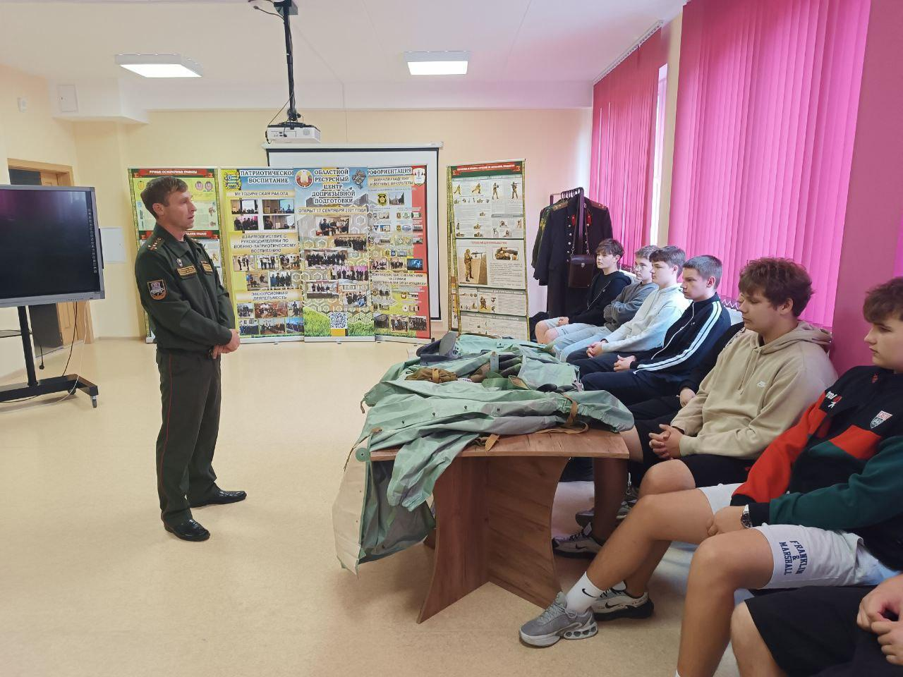
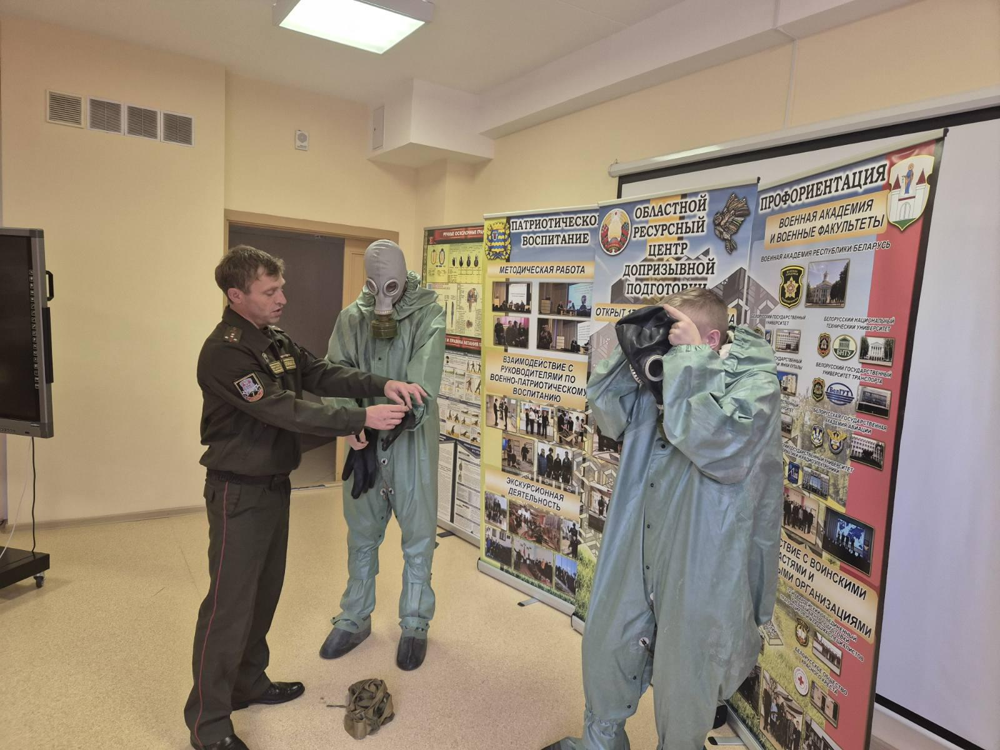
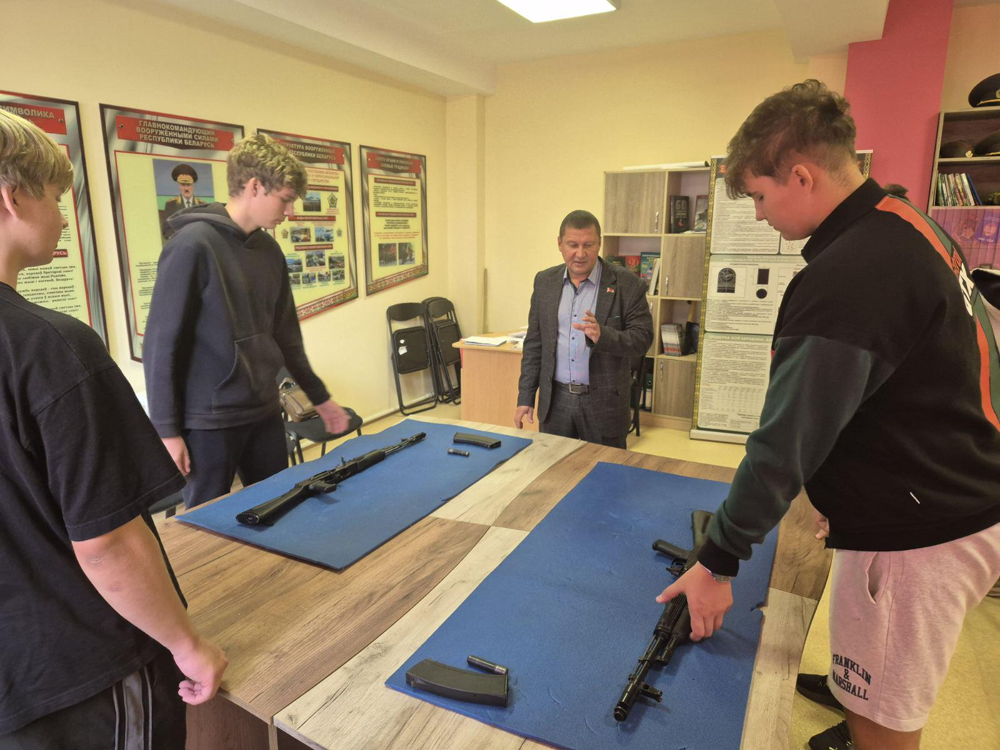
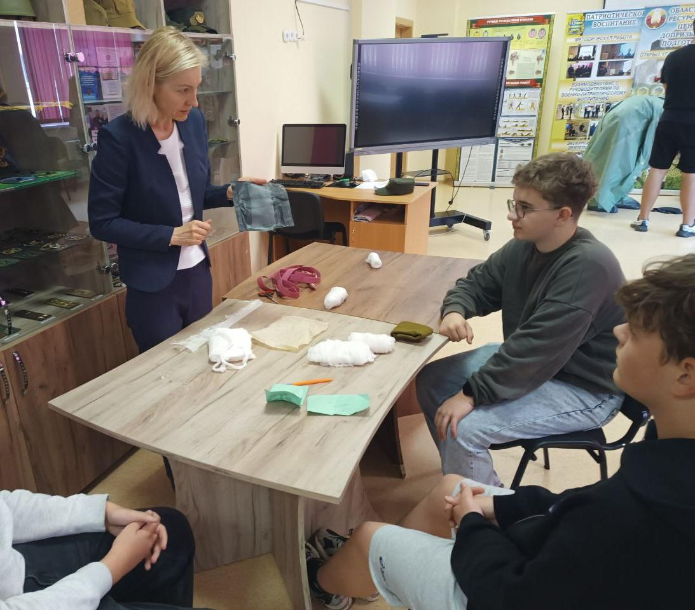
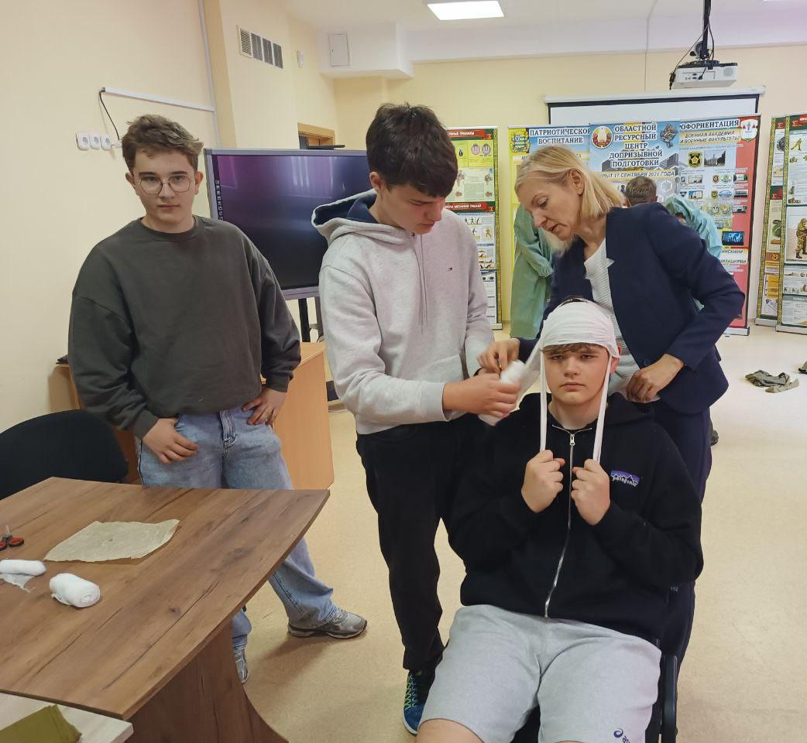
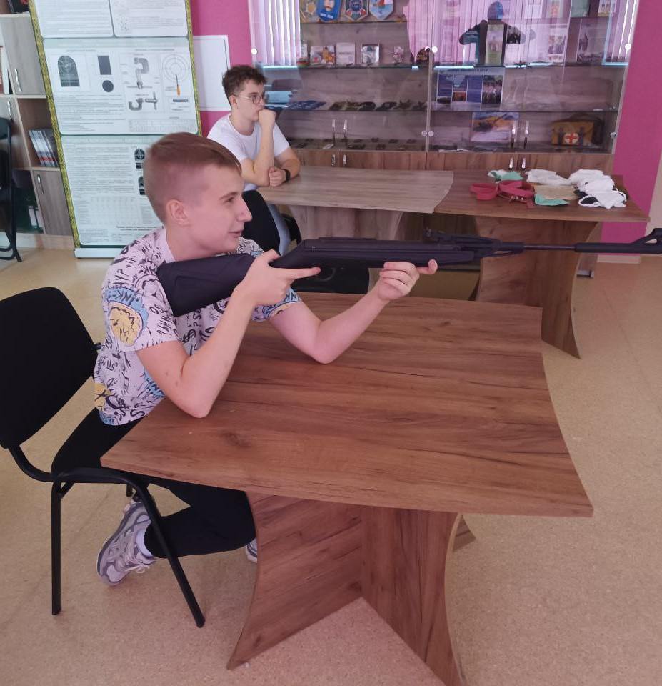

МОЛОДЕЖНЫЙ ДРАЙВ «ГОНКА ЗА ЛИДЕРОМ»
13 сентября учащиеся 10 «А» класса приняли участие в военном практикуме «Постигаем армейские науки». Практикум прошел на базе центра допризывной подготовки Борисовского района.

Целями мероприятия ставились: профориентационное ориентирование учащихся о военных специальностях и практическая отработка нормативов допризывной подготовки.

В рамках первой части практикума перед учащимися выступил начальник службы радиационной химической и биологической защиты 7 инженерного полка капитан Юрий Колеченок. Он рассказал ребятам о Боевом пути полка в годы Великой Отечественной войны, профессии военного инженера и задачах, которые выполняют инженерные подразделения.

В ходе практической части гимназисты получили практические навыки в неполной разборке и сборке автомата Калашникова АК-74, надевании противогаза и общевойскового защитного комплекта, оказании взаимопомощи при ранениях, а также выполнили упражнение учебных стрельб в интерактивном тире из винтовки.


